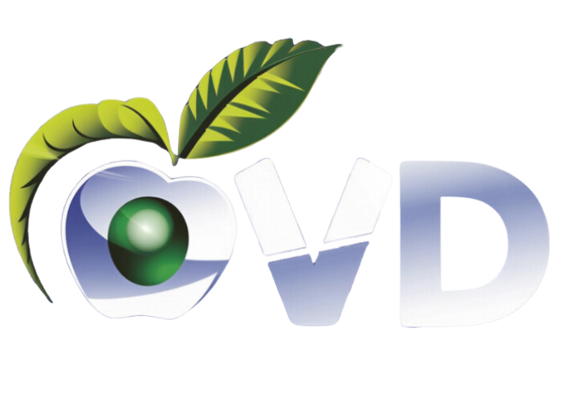

PARQUE
SAN FRANCISCO
El pulmón más emblemático de Oviedo. Situado en el corazón de la ciudad.
Oviedo, conocida por su rica historia y su belleza natural, ofrece
a sus habitantes y visitantes una amplia red de parques y zonas verdes que invitan a la
desconexión y al bienestar. Estos espacios no solo son un pulmón
verde en la ciudad, sino también el escenario perfecto para disfrutar de actividades al aire
libre, mejorar tu salud física y mental, y reconectar con la naturaleza.
Desde un tranquilo paseo por el icónico Campo San Francisco hasta una jornada de senderismo en el majestuoso Monte Naranco, los parques de Oviedo te ofrecen la oportunidad de mantenerte activo, respirar aire puro y relajarte en entornos naturales únicos. Descubre cómo estos rincones verdes pueden ayudarte a llevar una vida más saludable y equilibrada.
2.jpg)
Oviedo, capital del Principado de Asturias, no solo es conocida por su
riqueza cultural y arquitectónica, sino también por sus amplios y cuidados espacios verdes. La ciudad ofrece una variedad de parques y zonas ajardinadas perfectas para pasear, relajarse y disfrutar de la naturaleza en pleno corazón urbano.
Lugares emblemáticos como el Parque de San Francisco, con sus frondosos árboles centenarios, o el Parque de Invierno, ideal para actividades al aire libre, son solo algunos de los rincones que invitan a desconectar. Estos espacios verdes son el pulmón de Oviedo, un refugio para los amantes de la tranquilidad y la belleza natural.
Zonas Verdes 
Somos un grupo de alumnos/trabajadores apasionados por la naturaleza, el deporte y el bienestar, residentes en la hermosa ciudad de Oviedo, Asturias. Nuestro objetivo es compartir con todos los rincones verdes y las actividades al aire libre que esta ciudad tiene para ofrecer.
Nuestra misión es promover un estilo de vida saludable y activo, conectando a las personas con la naturaleza y fomentando el uso de los espacios verdes de Oviedo.
Si tienes alguna pregunta, sugerencia o simplemente quieres compartir tu experiencia en los parques de Oviedo, no dudes en contactarnos a través de [correo electrónico] o en nuestras redes sociales.
Puedes estar al día de todos nuestras noticias en la red de trabajo más importante. Estamos siempre abiertos a colaboraciones y sugerencias. Puedes contactarnos a través de LinkedIn
Nuestro equipo está formado por personas apasionadas y dedicadas, que trabajan con entusiasmo para hacer de Oviedo un lugar más saludable y feliz. Nos enorgullece contribuir al bienestar de nuestra comunidad.